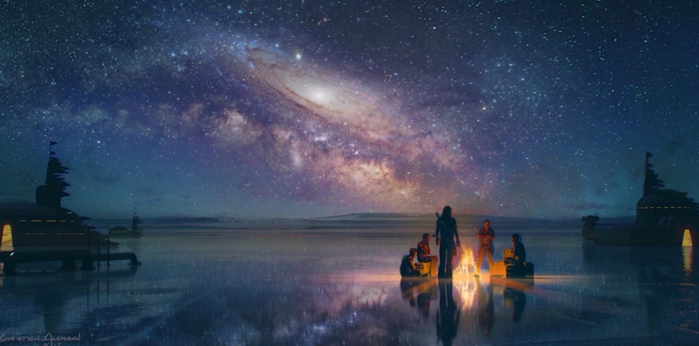

Did you know? Prior to Disney's firing of him in 2017, Colin Trevorrow was planned to direct the ninth installment in the Star Wars saga. However, despite his passion for the project, he and Lucasfilm/Disney arrived at the mutual decision to part ways due to serious creative differences.
These creative differences likely arose due to the direction Trevorrow wanted to take the movie. In a leaked script for Trevorrow's Episode IX titled Duel of the Fates, Trevorrow makes some bold, edgy decisions. This likely departed from Disney and Lucasfilm's desire to keep Star Wars family-friendly and watchable for all ages.
While Trevorrow has never publicly acknowledged the validity of the leaked script, he did confirm that a bunch of leaked concept art was for his draft of Duel of the Fates. Because these concept images align so closely with the leaked script, many (including me) believe this script to be an early draft of Trevorrow's Duel of the Fates.
Click the links above to explore a summary of the Duel of the Fates script.
Source: https://www.washingtonpost.com
Poe crashes the Falcon on the ice planet of Wavett in an attempt to escape the Knights of Ren.
Poe, Rey, Chewie, and BB-8, stranded on Wavett.

Rey uses the Force to lift the frozen Falcon out of the icy water on Wavett.

Finn is taken prisoner by Stormtroopers on Coruscant.

Rey battles a large monster on Mortis.
Source for concept arts: https://www.imgur.com